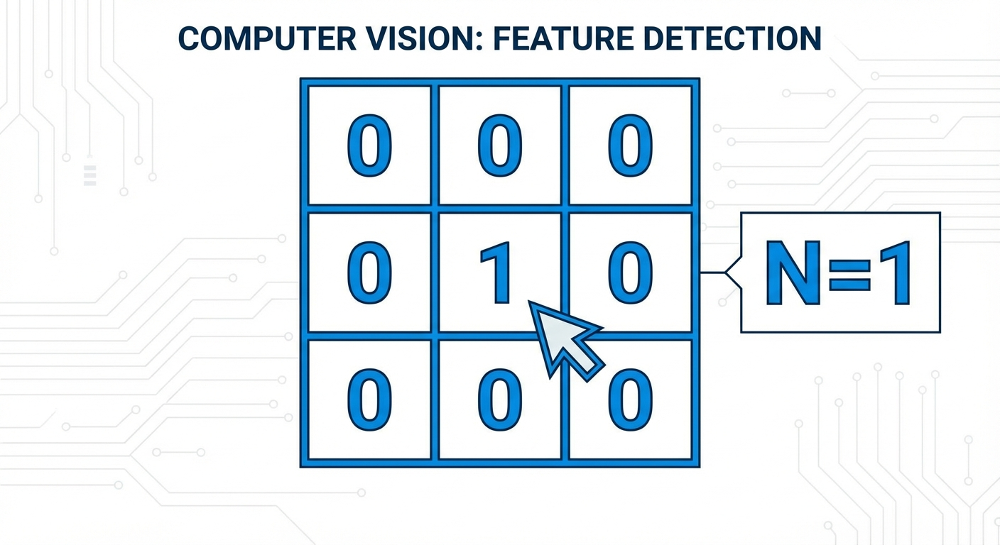
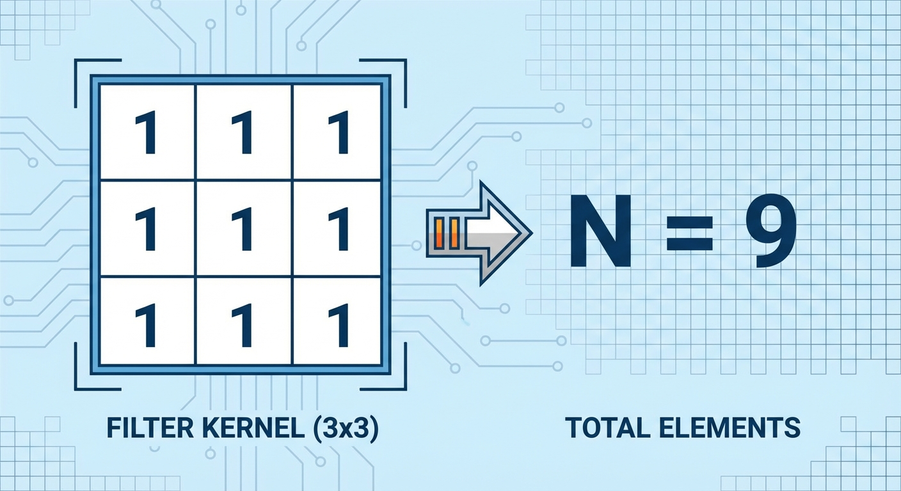
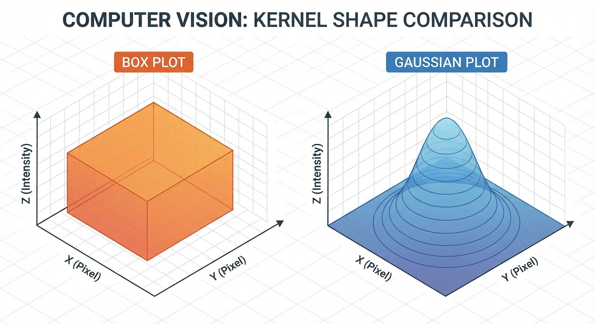

The Art of Blur and Sharpen
From Mechanics to Magic
In the last two lessons, we acted like mechanics. We learned how the engine works (the convolution operation) and where to drive the car (border handling). Now, we get to be the chefs. By simply changing the ingredients—the numbers inside the kernel—we can drastically alter the flavor of the image.
The Art of Doing Nothing
Before we start changing things, let's establish a baseline. What if we want to run a convolution but change absolutely nothing about the image?
To achieve this, we need a kernel that looks at the center pixel, multiplies it by 1, and ignores all the neighbors. We call this the Identity Filter.
Mathematically, if the center pixel is $100$, the calculation is:
$$ (0 \cdot \text{neighbors}) + (1 \cdot 100) = 100 $$
The normalization factor $N$ is just the sum of the weights: $1$. This is the "Do Nothing" operation.
Build Your Vocab
Identity Filter
A kernel with a central value of 1 and 0s everywhere else. It preserves the original image exactly as is during convolution.
Smoothing: The Democracy of Pixels
Now, let's mess things up a bit. One of the most common tasks in computer vision is to reduce noise. We do this by smoothing, or blurring, the image.
The simplest way to smooth an image is to treat every pixel in the neighborhood equally. Imagine a democracy where the center pixel and all its neighbors get one vote. We average them all together.
This is called the Box Blur (or Mean Filter). Here is the kernel for a $3 \times 3$ box blur:
Notice that the sum of the weights is $1+1+...+1 = 9$. So, our normalization factor $N$ must be 9. We sum up all 9 pixels under the kernel and divide by 9.
Check Your Understanding
If we used a $5 \times 5$ Box Blur kernel full of 1s, what would the normalization factor $N$ be?
While Box Blur is simple, it has a drawback. It treats a distant neighbor in the corner exactly the same as the pixel right next to the center. This creates "boxy" or geometric artifacts in the blurred image.
Smoothing: The Elitist Approach
To get a smoother, more natural blur, we need to be a bit more elitist. The center pixel should be the most important, the immediate neighbors somewhat important, and the corner pixels the least important.
This approach is called Gaussian Blur. The weights follow a bell curve (a Gaussian distribution).
Here is a common integer approximation of a $3 \times 3$ Gaussian kernel:
$$ h_{gaussian} = \begin{pmatrix} 1 & 2 & 1 \\ 2 & 4 & 2 \\ 1 & 2 & 1 \end{pmatrix} $$
Let's check the math. If we sum these weights:
$$ 1+2+1 + 2+4+2 + 1+2+1 = 16 $$
So, for this specific kernel, we divide the result by $N=16$.
Test Your Knowledge
Why does Gaussian Blur generally look better than Box Blur?
Sharpening: Enhancing Differences
So far, we've been blending pixels together. But what if we want to do the opposite? What if we want to make edges pop out?
To sharpen an image, we want to increase the contrast between a pixel and its neighbors. We can do this by subtracting the neighbors from the center.
Consider this Sharpen Kernel:
$$ h_{sharpen} = \begin{pmatrix} 0 & -1 & 0 \\ -1 & 5 & -1 \\ 0 & -1 & 0 \end{pmatrix} $$
Let's analyze the normalization factor $N$.
$$ 5 + (-1) + (-1) + (-1) + (-1) = 5 - 4 = 1 $$
Since the sum is 1, the overall brightness of the image stays roughly the same.
Here is the logic:
- If the center pixel is similar to its neighbors (a flat area), $5 \times \text{val} - 4 \times \text{val} = 1 \times \text{val}$. No change.
- If the center is much brighter than its neighbors (an edge), the subtraction doesn't pull it down enough, and the center becomes even brighter relative to the surroundings.
Filter Type
Kernel Settings
Identity: The center pixel is multiplied by 1. No neighbors are counted.
However, sharpening comes with a risk. Since we are using negative numbers and multipliers, the math might produce a pixel value like $300$ or $-50$.
Stop and Think
If I apply a sharpen filter and the resulting pixel calculation is 300, but my image format only supports values from 0 to 255, what should I do?
Why It Matters
Why do we care about blurring and sharpening? It's not just for making photos look pretty.
- Blurring is essential for "Denoising." Before a computer tries to detect an object, it often blurs the image slightly to remove graininess that might confuse the algorithm.
- Sharpening is often used in printing and medical imaging to ensure fine details (like a fracture in a bone X-ray) are visible to the human eye.
Common Question
Can I un-blur an image using the Sharpen filter?
Great question! In CSI movies, they click 'Enhance' and a blurry face becomes clear. In reality? Not quite. Blurring destroys information (it averages it away). Sharpening can boost the edges that remain, but it cannot magically restore fine details that were completely smeared out. It also tends to amplify noise.
Review and Reflect
In this lesson, we mastered the art of kernel design:
- The Identity filter (central 1) leaves the image alone.
- Box Blur (all 1s) smoothes democratically but adds artifacts.
- Gaussian Blur (bell curve) smoothes naturally by prioritizing the center.
- Sharpen (negative neighbors) enhances edges by amplifying differences.
Now that we know how to smooth things out, we are ready for the next challenge: finding the edges. In the next lesson, we will look at the Sobel filter and the math of gradients.